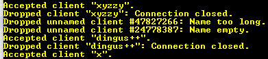
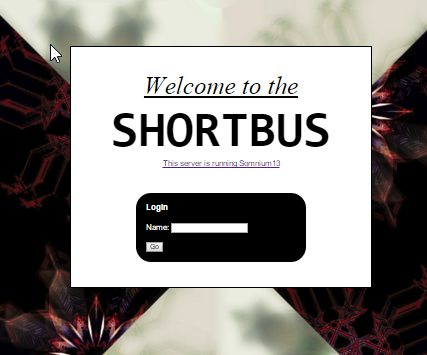
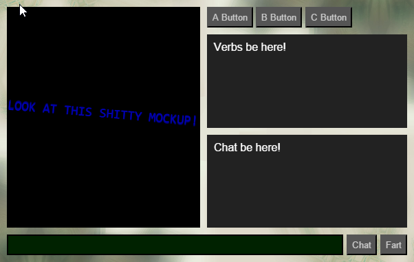
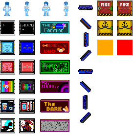
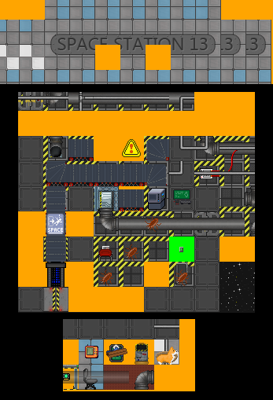

I return! The last two weeks have been crazy, and I only managed to get about a week worth of work done.
First, I managed to fix some issues with map loading and dramatically improved the devmap output. Here's an image of the center of the station. The main issues left are tables and lattices, which are displayed in an odd way. The devmap also won't show icons created or modified at runtime, and there isn't any code anywhere to deal with them yet.
I got some basic networking set up. It uses websockets. The code is kind-of ugly right now, but it's a starting point.
The client exists now. The only thing that works now is the login page. The login system clearly needs more than just a username, but I'd rather it be more elegant and secure that having to provide a password for each server you play on. Eventually I'd either like to go with OpenID (Sign in through Steam/Twitter/Google) or have some kind of master server that authenticates clients. Once a client logs in, they get a shitty mockup of game UI.
 Goonstation got leaked and is getting an official release. If this had happened earlier I would have totally considered using it as a base, but after the /vg/ incident I think it's best to stick with /tg/ for good.
This next week I hope to resolve the rest of the errors with map loading and subsystem initialization, then I'll hopefully make the game able to deal with connecting clients.
It's me again. I'm the dumb asshole trying to translate SS13 to C#. I've made a decent amount of progress this week, so I figured I'd share.
About two weeks ago I decided to ask Reddit what codebase to use as a base. We came to a general consensus that /vg/station would be a good idea. I now thoroughly regret this. A lot of terrible things happened, but the short version is that I'm going to stick with /tg/station. This isn't meant as some kind of insult to the authors of Bay or /vg/, it just really didn't work for this particular insane project.
The plan is to make the client a webclient, so the next logical step was to get DMIs rendering in the web browser. This is pretty simple on a basic level, they're just PNGs. I wrote a fun little library to deal with icon states and animations, and BLAMO:
Yeah, this is a gif. I didn't want to bother with moving all of the content and code onto this site. Deal with it.
Next I re-wrote the devmap to use these icons! The devmap is a thing I made to spit out the map into the browser, to see just how fucking broken it is. It originally represented each object with a different colored box. Now it's a bit nicer!
The colored squares represent errors:
For a larger sample of butchered Space Station, see here!
The plan for this next week is to cut down on the huge slew of exceptions and warnings that get spat out when the game initializes. The map badly needs to load faster. 1:30 is ridiculous. I'll hopefully finally start working on the client as well.
I'll hopefully start doing more regular devblogs here. Maybe next week I'll have a less fucked map and some kind of login screen.
I've made this website to serve as a better hub for information about the project. This will serve as a sort of development blog. I'm not so good at the web design. I'm too busy getting shit done to care that I'm using the default Bootstrap style.
Somnium13's components live in the following repositories:
First things first. BYOND is not ideal for Space Station 13. It's great in a lot of ways. It empowers amatures to learn object oriented programming and make multiplayer games. Its IDE contains a level editor and an image editor. But it was designed for MUDs. It supports Telnet. It has very poor cross-platform support. It uses an obscure, error-prone scripting language with many peculiarities. Its networking is bad. It's almost impossible to get threading to work.
There have been many, many attempts to remake Space Station 13 in other game engines. None of these attempts has been incredibly successful. This isn't because these developers are incompetent. It's because it's nearly impossible. SS13 is a very complex game with a huge codebase. It would be difficult for any group of developers to create a stand alone version.
It's especially difficult for professional developers to pick up, considering the size of the community and the already open nature of the code. There's very little potential for profit considering the game's niche appeal. One of the best parts of SS13 is its potential for customization. Modding is not easy to get right, especially on the scale that a SS13 remake would require.
Sadly, the prospects aren't much better for hobbyists. The several groups working on clones independently hinders efforts more than it helps. It's discouraging for both developers and players when three clones exist and they all have very little to show. Neither will migrate from a community with active development to a remake with a fraction of the features.
Almost all attempts are over-ambitous and include plans to remake all the assets or even make the game 3D. Creating 3D assets, complete with textures and animations, is considerably more difficult than small 2D sprites. It also limits the ability of a newbie or a coder with poor art skills to create assets.
After watching many clones come and go (several of them my own), I decided that the best way to approach the problem would be the most backwards sounding. We needed to extract SS13 from BYOND, translate it into a modern language, and build a new engine around it. This is an ideal solution for the following reasons:
{kind=link}
{kind=link}
{kind=link}